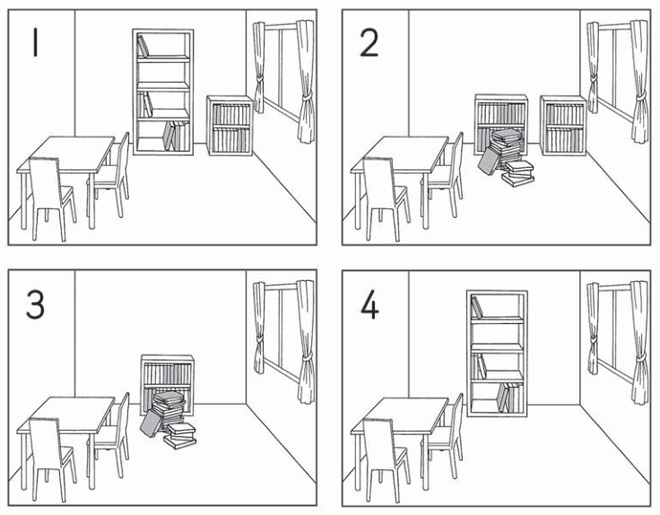

1. 先週 デパートに かいものに いきました。
もんだい1 の ことばは ひらがなで どう かきますか。1・2・3・4から いちばん いい ものを ひとつ えらんで ください。
（れい） 大きな えが あります。
（かいとうようし）
| （れい） | ● | ② | ③ | ④ |
2. ごはんの 後で さんぽします。
3. もう いちど 言って ください。
4. ちかくに 山が あります。
5. この ホテルは へやが 多いです。
6. ともだちと いっしょに 学校に いきます。
7. えんぴつが 六本 あります。
8. この 新聞は いくらですか。
9. この カメラは 安いです。
10. かさは 外に あります。
もんだい2 の ことばは どう かきますか。1・2・3・4から いちばん いい ものを ひとつ えらんで ください。
（れい） わたしの こどもは はなが すきです。
1  2
2  3
3  4
4 
2 3 4 （かいとうようし）
| （れい） | ① | ● | ③ | ④ |
11. けさ しゃわーを あびました。
12. コーヒーを のみました。
13. あたらしい くるまを かいました。
14. このぼうしは 1000えんです。
15. しゅくだいが はんぶん おわりました。
16. わたしの うちに きませんか。
17. きのう たなかさんと あいました。
18. いもうとと おなじふくを かいました。
もんだい3 （ ）に なにを いれますか。1・2・3・4から いちばん いい ものを ひとつ えらんで ください。
（れい） あそこで バスに （ ）。
（かいとうようし）
| （れい） | ● | ② | ③ | ④ |
19. わたしの へやは この（ ）の 2かいです。
20. さとうさんは ギターを じょうずに（ ）。
21. テーブルに おさらと はしを（ ）ください。
22. けさ そうじを したから へやは（ ）です。
23. きょうは 500（ ）およぎました。
24. えきから たいしかんまでの（ ）を かいて ください。
25. うるさいから テレビを（ ）ください。
26. きょうは（ ）が ふっています。
27. はこに りんごが（ ）あります。

28. めがねは つくえの（ ）に あります。

もんだい4 の ぶんと だいたい おなじ いみの ぶんが あります。1・2・3・4から いちばん いい ものを ひとつ えらんで ください。
（れい） ここは でぐちです。いりぐちは あちらです。
（かいとうようし）
| （れい） | ① | ② | ● | ④ |
29. まいばん くにの かぞくに でんわします。
30. このまちには ゆうめいな たてものが あります。
31. その えいがは おもしろくなかったです。
32. たんじょうびは 6がつ15にちです。
33. にねんまえに きょうとへ いきました。
もんだい1 （ ）に 何を 入れますか。1・2・3・4から いちばん いい ものを 一つ えらんで ください。
（れい） これ（ ）えんぴつです。
（かいとうようし）
| （れい） | ① | ② | ● | ④ |
1. 日本（ ）ラーメンは おいしいです。
2. わたしには きょうだいが 二人 います。弟（ ）妹です。
3.
山下
「田中さん（ ）きのう どこかに 出かけましたか。」
田中
「いいえ、いえに いました。」
4.
（タクシーで）
A
「つぎのかどを 右（ ）まがって ください。」
B
「わかりました。」
5. きのう、わたしは ひとり（ ）えいがを 見に 行きました。
6.
山下
「今日 パーティーが ありますから、田中さん（ ）来て ください。」
田中
「ありがとうございます。」
7.
田中
「この ぼうしは 山田さん（ ）ですか。」
山田
「はい。」
8. 駅まで タクシーで 1000円（ ）です。
9.
A
「さようなら。」
B
「さようなら。また（ ）。」
10. わたしの 母は 50さいです。父は 55さいです。母は 父（ ）5さい わかいです。
11.
子ども
「いただきます。」
母
「あ、食べる（ ）手を あらいましょう。」
12.
A
「東京でも 雪が ふりますか。」
B
「ええ、ふりますよ。でも、きょねんは あまり（ ）。」
13.
（川で）
A
「見て ください。小さな 魚が たくさん（ ）よ。」
B
「ほんとうですね。30ぴき くらい いますね。」
14.
中川
「山田さんの その カメラは いいですね。どこで かいましたか。」
山田
「いえ、これは 兄に（ ）。」
15. たまごりょうりの じょうずな 作りかたを（ ）読みました。
16.
（電話で）
本田
「はい、本田です。」
北山
「あ、北山花子です。すみません、（ ）。」
本田
「はい。ちょっと まって くださいね。」
もんだい2 ★に 入る ものは どれですか。1・2・3・4から いちばん いい ものを 一つ えらんで ください。
（もんだいれい）
A「_ _ ★ _ か。」
B「山田さんです。」
（こたえかた）
1．ただしい 文を つくります。
A「 3 あの人 2 は★4 だれ 1 ですか。」
B「山田さんです。」
2．★に 入る ばんごうを くろく ぬります。
（かいとうようし） （れい） ① ② ③ ●
17.
（店で）
田中
「すみません。くだもの_ _ ★ _か。」
店の人
「こちらです。」
18.
A
「山下さんは？」
B
「となりの へやで_ _ ★ _して います。」
19.
A
「会社_ _ ★ _行って いますか。」
B
「わたしは あるいて 行って います。」
20.
山田
「ジョンさん、しゅくだいは ぜんぶ おわりましたか。」
ジョン
「いいえ、まだです。ここ_ _ ★ _、さいごの もんだいが むずかしいです。」
21.
（本屋で）
ヤン
「わたしは この本を 買います。アンナさんは どんな 本が いいですか。」
アンナ
「わたしは もう少し_ _ ★ _が いいです。」
もんだい3 22から26に 何を 入れますか。ぶんしょうの いみを かんがえて、1・2・3・4から いちばん いい ものを 一つ えらんで ください。
日本で べんきょうして いる 学生が 「すきな 店」の ぶんしょうを 書いて、クラスの みんなの 前で 読みました。
（1） ケンさんの ぶんしょう
わたしは すしが すきです。日本には たくさん すし屋が ありますね。わたしの 国には すし屋が ありませんから、今 とても うれしいです。日本に 22、いろいろな 店で 食べました。学校の 前の 店は、安くて おいしいです。すしが すきな 人は、いっしょに 23。
（2） ミンジさんの ぶんしょう
わたしは えきの ちかくの 本屋が すきです。えきの ちかくの 本屋 24 大きい お店です。外国の 本も 売って います。わたしの 国のも 25。そして、わたしが すきな りょうりの 本も 多いです。26 本は いつも えきの ちかくの 本屋で 買います。みなさんは すきな 本屋が ありますか。
22.
23.
24.
25.
26.
もんだい4 つぎの （1）から （3）の ぶんしょうを 読んで、しつもんに こたえて ください。こたえは、1・2・3・4から いちばん いい ものを 一つ えらんで ください。
（1）
わたしは 今日、友だちと 買い物に 行きました。3か月前に 見た えいがの DVDが ほしかったからです。買った DVDは、友だちや 姉と いっしょに 見ます。
27. 「わたし」は今日、何をしましたか。
（2）
わたしの へやには、テーブルが 一つと いすが 二つと 本だなが 一つ あります。本が たくさん ありますから、もっと 大きい 本だなが ほしいです。
28. 今のへやはどれですか。

（3）
森さんの 机の 上に、山口先生の メモと 本が あります。
森さん
クラスで 使う 本を 中川先生に かりました。
5ページを25枚 コピーして ください。
コピーは 南さんに わたして ください。
本は、わたしが あした かえしますから、わたしの 机の 上に おいて ください。
山口
29. 森さんはコピーをしたあとで、本をどうしますか。
もんだい5 つぎの ぶんしょうを 読んで、しつもんに こたえて ください。こたえは、1・2・3・4から いちばん いい ものを 一つ えらんで ください。
きのうの 夜は おそくまで しごとを しました。とても つかれました。しごとの あと、電車で 帰りました。
家の 近くの 駅で 電車を おりました。外は 雨でしたが、わたしは かさが ありませんでした。とても こまりました。
駅の 人が わたしを 見て、「あの はこの 中の かさを 使って ください。」と 言いました。はこの 中には かさが 3本 ありました。わたしは 「えっ、いいんですか。」と 聞きました。
駅の 人は 「あれは 『みんなの かさ』です。お金は いりません。あした、あの はこに かえして ください。」と 言いました。
わたしは 「わかりました。ありがとうございます。」と 言って、かさを かりて 帰りました。
30. どうしてこまりましたか。
31. 「わたし」は、あしたどうしますか。
もんだい6 右の ページを 見て、下の しつもんに こたえて ください。こたえは、1・2・3・4から いちばん いい ものを 一つ えらんで ください。
32. あらきやで トイレットペーパーと にくと やさいを 同じ 日に 買いたいです。いつが 安いですか。
あらきや
朝8：00～夜9：00
（電話：012-34-5678）
安い！
安い！
6月11日（月）～14日（木）
さとう 128円 トイレットペーパー 490円
安い！
6月15日（金）～18日（月）
しょうゆ 198円 ティッシュペーパー 290円
毎週 安い！
| 月・火 | くだもの、魚、ジュース |
|---|---|
| 水・木 | とうふ、にく、やさい |
| 金・土 | パン、ぎゅうにゅう、魚、やさい |
End of available questions